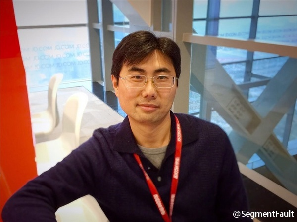
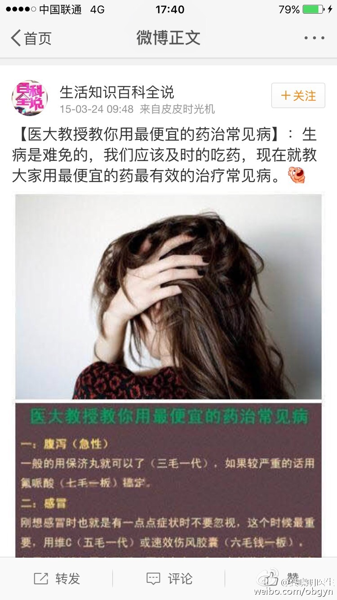
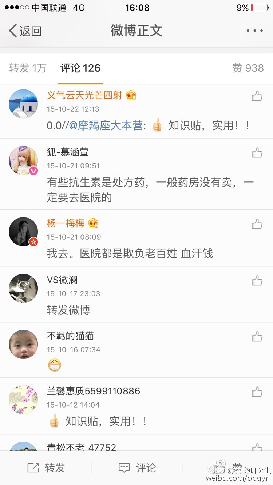
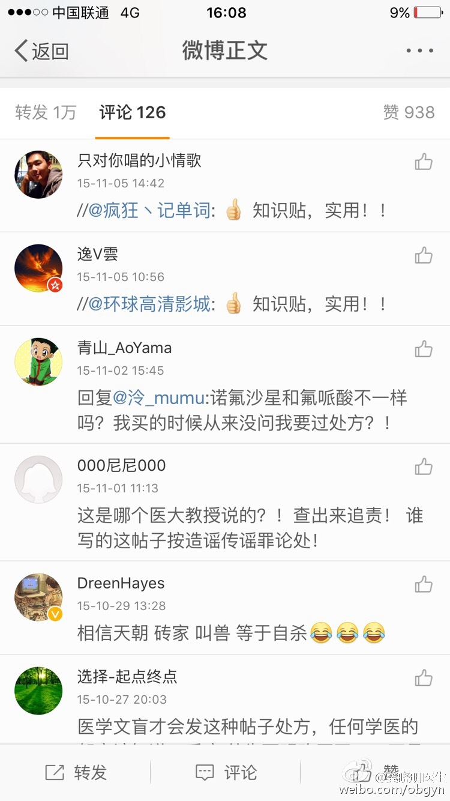
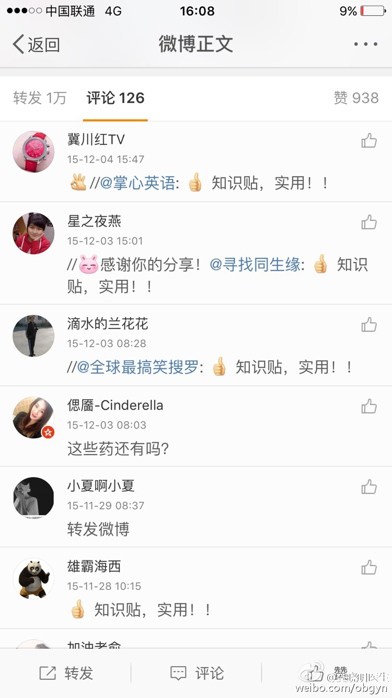

大师有限，借助互联网做普通医师教育和患者科普，确实能解决目前的一些问题。//@catbert：@Ada李力 如果最后要toC的话，我觉得这也是爱美医生的一大优势@面子工程师杨保华:昨天山西来一个姑娘，坐了一天一夜的火车，就只是为了面部痘印、红血丝得到改善。我问她为什么舍近求远。她说本地美容机构给人感觉不是很信任。实际上这种情况已经有很多次了。我一直在思考，是什么原因导致的呢？相信@齐显龙医师 @周展超教授 @laserking--赵小忠 也经常遇到。
@阿朱 京东“技院老板”，这个称谓不错。@SegmentFault:【图灵访谈】@阿朱 ：从 50 到 5000，从技术到人。身为京东“技院老板”，他内心却仍然是当年那个注重“实效”的程序员，他希望能用自己手中抓着的杠杆，撬动地球。 网页链接 
这些营销账号会很一致地互推内容，而且内容基本都是抄袭和改编，没有原创。不过，微博最近正在提高个人及普通用户的权重和曝光率，应该逐渐会有改善。@来去之间@龚晓明医生:看了前面一条微博的评论，就大概知道有多少人在控制着微博这条营销链了。估计掌心英语 寻找同生缘 全球最搞笑搜罗 摩羯座大本营 环球高清影城 疯狂记单词 全是被一个企业控制的微博账号才会这样一致地转发。如果你信这样的营销号，还不如信一个靠谱点的真实的人。 
骂黄牛骂错对象了。 //@陶建辉快乐妈咪:这个挂号必须市场化，现在4500的一个号，医生或医院都没有赚到。只要政府固定价格，对于这种稀缺资源，一定会有票贩子。@人民日报:【女孩怒斥医院票贩子：300元号炒到4500 北京卫计委介入】近日，一名女孩在北京某医院站了一两天没挂上号，怒斥票贩子和保安里应外合，把300块钱的号炒到了4500。“这大北京，如果今天我回家死道上了，那这社会真没希望了。”说到最后，女孩落泪了……北京卫计委表示已经介入。网页链接